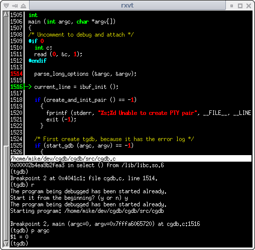

Welcome
tgdb is a lightweight curses (terminal-based) interface to the GNU Debugger (GDB). In addition to the standard gdb console, tgdb provides a split screen view that displays the source code as it executes. The keyboard interface is modeled after vim, so vim users should feel at home using tgdb.
Screenshot

Features
- Syntax-highlighted source window
- Assembly view
- Visual breakpoint setting
- Keyboard shortcuts for common functions
- Searching source window (using regexp)
- Scrollable gdb history of entire session
- Tab completion
- Key mappings (macros)
Stable Release
Download source package: tgdb-0.8.0.tar.gz (changes)
MD5 checksum:
180c1c7100bd9591b0d29e46896b5092
Older Releases
Older source packages can be found at: https://tgdb.me/filesLatest Sources
$ git clone git://github.com/tgdb/tgdb.git
$ cd tgdb
$ ./autogen.sh
configure script is not included in the git
repository, so it must be generated with the autogen.sh script.)
Installing
tgdb depends on libreadline and ncurses development libraries.
$ ./configure --prefix=/usr/local
$ make
$ sudo make install
Documentation
Online documentation:Support or Contact
Get help on our mailing lists:
- tgdb: User discussion, Q&A, bug reports, feature requests, etc.
- tgdb-dev: Developer discussion, patches, etc.
- Archived discussions are also available in the old Sourceforge project.
Or find us on IRC channel #tgdb on liberachat.